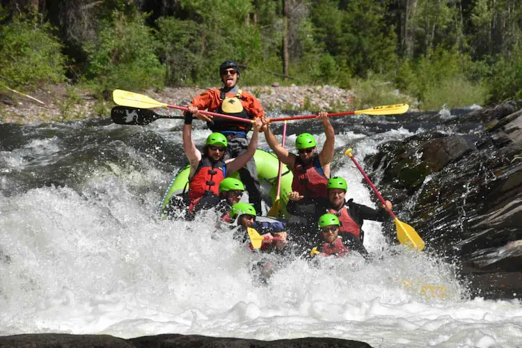
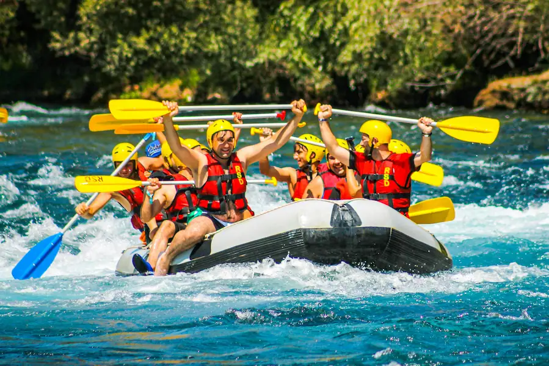
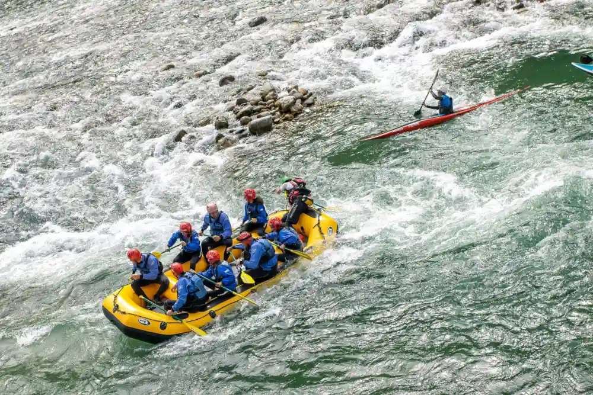
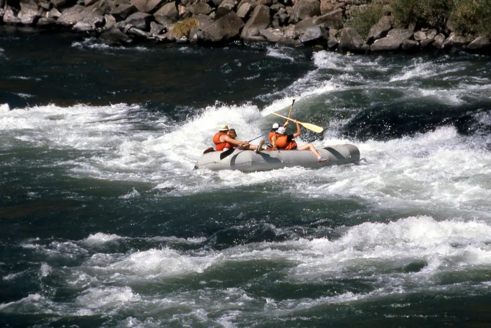

This river trip is one of the best experiences out there, featuring continuous thrilling whitewater, clean water, excellent camping spots, great fishing opportunities, natural hot springs, and diverse wildlife. The journey culminates in a stunning canyon that is truly unique. Typically lasting around six days, this adventure is perfect for bringing groups together in a memorable way.
Blackwater River (6/7 day)
The picturesque river flows through a remote wilderness area, known for its stunning natural beauty and vibrant waters. There is an indescribable quality to this river and the surrounding landscape that captivates visitors. However, the water levels can be unpredictable, and the challenging rapids make access difficult.

Dunns Creek (1 or 2 day)
Tomoka River (3 day)
The river through the canyon is remarkable because it flows through one of the world's natural wonders, with trips that can last up to 25 days. This river features powerful rapids and calm stretches in between. It’s an excellent choice for those interested in side hikes along the way.
Rodgers River (5 day)
Like many remarkable adventures, this journey features thrilling rapids, opportunities for side hikes, and chances to observe wildlife, along with the possibility of witnessing the stunning northern lights. A memorable highlight is the final night’s campsite, where a spectacular waterfall cascades dramatically from a high cliff across the river.
| Trip Length | River | Difficulty | Adult Price | Kids Price |
|---|---|---|---|---|
| 1 day | Dunns River | Beginner | $120/person | $100/person |
| 1 day | Pinhook River | Intermediate | $130/person | $110/person |
| 1 day | Palm River | Advanced | $140/person | N/A |
| 2 day | Dunns River | Beginner | $300/person | $250/person |
| 2 day | Chatham River | Inter/Adv | $310/person | $275/person |
| 2 day | Estero River | Advanced | $350/person | N/A |
| 3 day | Chatham River | Intermediate | $450/person | $400/person |
| 3 day | Tomoka River | Advanced | $500/person | N/A |
| 4-5 day | Middle River | Intermediate | $1000/person | $900/person |
| 4-5 day | Orange River | Inter/Adv | $1100/person | $1000/person |
| 4-5 day | Rodgers River | Advanced | $1200/person | N/A |
| 6-7 day | Trout River | Int/Adv | $1400/person | $1300/person |
| 6-7 day | Blackwater River | Advanced | $1500/person | N/A |
| Single Day Kayaking | Dunns River | Beginner | $80/person | $70/person |
| Single Day Tubing | Dunns River | Beginner | $60/person | $50/person |